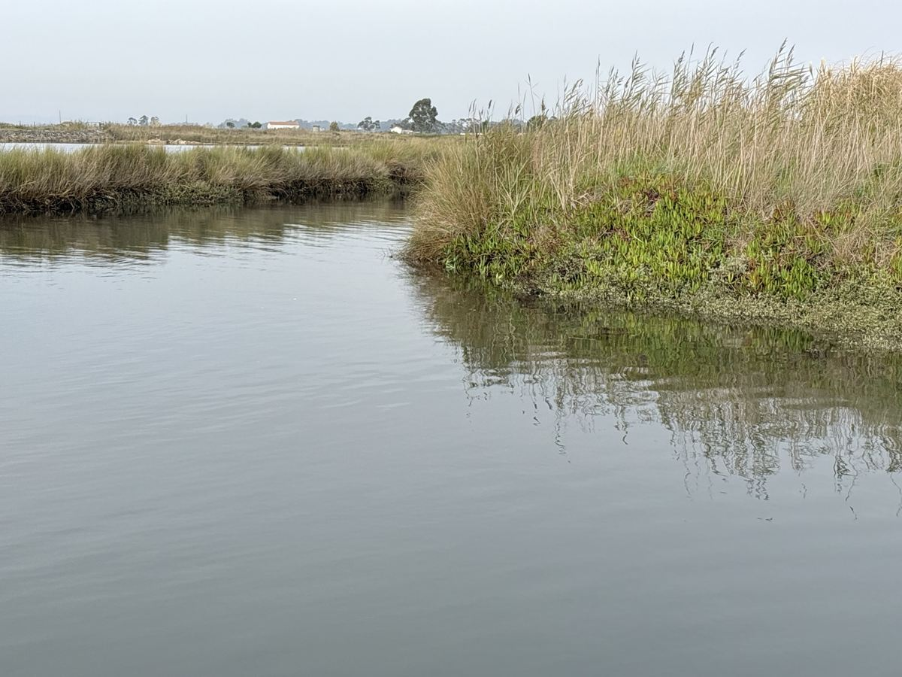
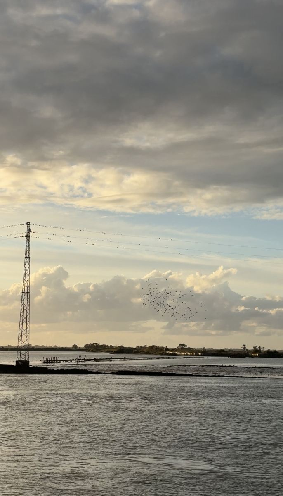
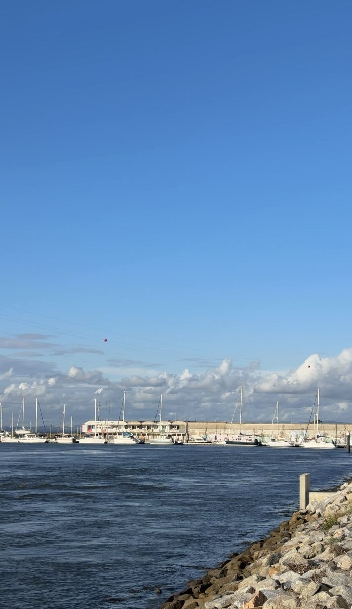
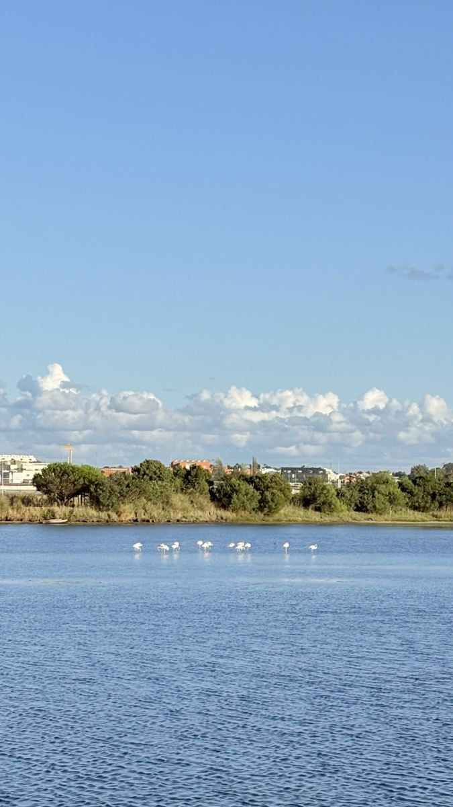
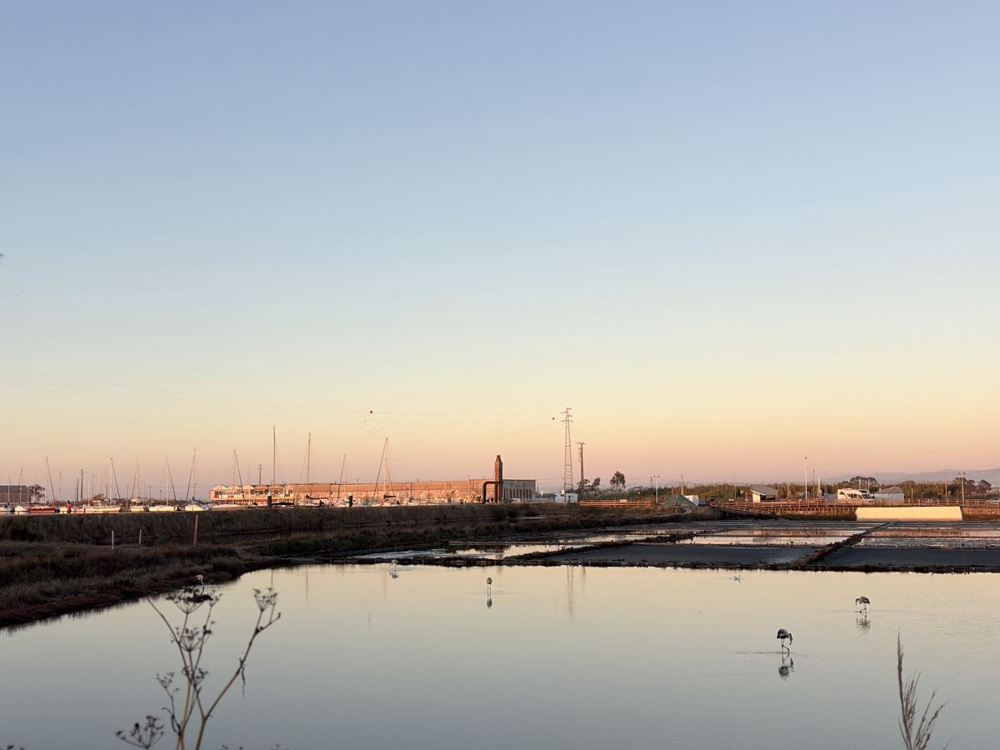

What I see when I walk beside Antiga Lota
O que vejo quando caminho junto à Antiga Lota
Vivo em Aveiro e caminho regularmente nesta paisagem. Estas fotografias documentam as minhas visitas à antiga zona portuária, à Rua do Sal e às salinas adjacentes. A área do projeto urbanístico não está isolada da ria que a rodeia. Não pretendo substituir um levantamento ecológico profissional: quero mostrar o que vejo e pedir uma avaliação independente.
I am a resident of Aveiro. I walk through this landscape regularly. These are photographs from my visits to the former port site, Rua do Sal and the adjacent salt pans. The municipal development boundary does not describe the whole surrounding lagoon. This gallery records what I see, not a professional ecological survey.
Building here could change more than the land beneath the buildings. I want Antiga Lota to be protected from new hotel and residential development and considered for ecological recovery. I ask environmental organisations and researchers to examine the connections between the site, nearby waters and bird habitats.
Locations described by the photographer. All Antiga Lota and Rua do Sal photographs: September 2026. Exact dates for other salt-pan photographs should be checked against the original image metadata before final publication. Bird identifications may require expert confirmation.Antiga Lota · September 2026




Rua do Sal · September 2026


Adjacent salt pans / Salgado · field visits

